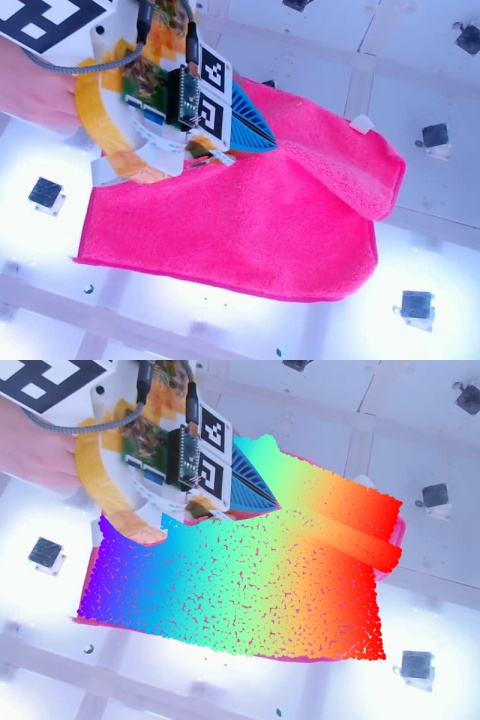
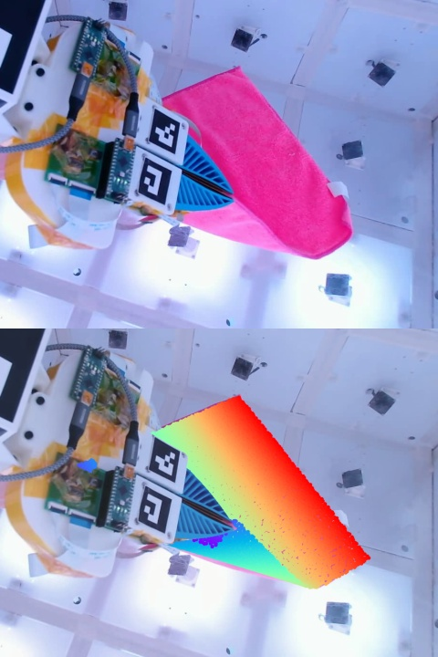
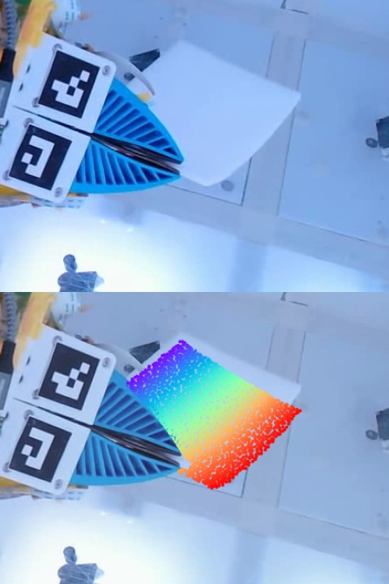

InputHermiteTwin
InputHermiteTwin
InputHermiteTwinObservation above; resimulation below. Colors follow the same material points throughout the motion.
Abstract
Existing deformable digital twins often represent a thin object with one particle set that must both model bending and resolve contact with the robot. HermiteTwin separates these roles. A coarse, C¹ bicubic Hermite shell models deformation with Kirchhoff–Love bending, while dense samples in material space are captured, clamped, and released by the gripper. Their attachment forces reach the shell through the Hermite basis, keeping the physical state compact while resolving the grasp at a finer scale. We identify effective material and contact parameters with CMA-ES followed by adjoint-based refinement, and transport a reconstructed Gaussian appearance model with the simulated motion. Experiments on real cloth and foam examine reconstruction, resimulation, and future prediction; additional scenes demonstrate interactions with new objects.
Method Overview
From calibrated multiview video, we reconstruct a rest surface and Gaussian appearance. Inverse simulation identifies effective material and contact parameters. The resulting twin can resimulate the observed interaction, continue under future robot motion, and interact with new objects.
Qualitative Comparisons
Reconstruction and resimulation: HermiteTwin, PhysTwin, and GS-Dynamics. Representative frames from the paper. Simulated points are colored by their material coordinate at rest, so the same color follows the same part of the sheet.
| t = 100 | t = 160 | t = 269 | |
|---|---|---|---|
| Observation | |||
| HermiteTwin | |||
| PhysTwin | |||
| GS-Dynamics |
The gripper lifts and folds a cloth corner. These panels preserve the historical runs used in the paper figure.
| t = 100 | t = 150 | t = 240 | |
|---|---|---|---|
| Observation | |||
| HermiteTwin | |||
| PhysTwin | |||
| GS-Dynamics |
A stiffer foam sheet under grasping. The archived GS-Dynamics foam panels use a perturbed rollout; the original baseline remains to be verified.
Future Prediction
Fit on frames 1–300, then continue with fixed parameters under recorded future robot motion. The first three columns show fitting frames; the last three show held-out prediction. The simulated state is not reset to the observations.
From Point Clouds to Gaussian Appearance
The same EP3 interaction in motion. Switch between the paper’s material-colored geometry and a Gaussian appearance rendering of the saved trajectories.
Observation · HermiteTwin · PhysTwin · GS-Dynamics. Blue marks fitting; red marks held-out prediction. Download video
Appearance visualization trial. The same source-frame Gaussians are transported by each method’s saved motion, without appearance refitting. Download video
This added visualization uses the archived trajectories and camera calibration. It does not rerun physics or change the paper’s quantitative results. Appearance transport can introduce artifacts independently of the simulated geometry.
Grasp Transfer
Is the grasp model alone sufficient? Applying the material-space capture, clamp, and release mechanism to PhysTwin lifts the cloth near the fingertip, but does not recover the observed fold in this diagnostic interaction.
Historical grasp-transfer study at frame 160. Its fitting setup is retained separately from the final main-table runs.
Quantitative Results
Values from the current manuscript. Lower CD and LPIPS are better; higher IoU, PSNR, and SSIM are better.
Reconstruction & resimulation
| Method | CD ↓ mm² | IoU ↑ % | PSNR ↑ dB |
|---|---|---|---|
| GS-Dynamics | 116.95 | 83.24 | 22.160 |
| PhysTwin | 61.89 | 85.22 | 22.745 |
| HermiteTwin | 42.05 | 88.89 | 24.242 |
Ten interactions: eight cloth and two foam. Equal interaction weights.
Future prediction
| Method | CD ↓ mm² | IoU ↑ % | PSNR ↑ dB | SSIM ↑ | LPIPS ↓ |
|---|---|---|---|---|---|
| GS-Dynamics | 552.40 | 71.40 | 17.696 | 0.9132 | 0.1291 |
| PhysTwin | 120.40 | 81.08 | 20.022 | 0.9316 | 0.0994 |
| HermiteTwin | 67.75 | 84.78 | 21.417 | 0.9396 | 0.0850 |
The saved five-metric comparison contains eight paired sequences;
Applications
The identified twin can be driven through new interactions: draping over a book, placing inside a box, and toppling a free bottle.
These synthesized interactions are qualitative demonstrations.
Citation
If you find this work useful, please cite:
@inproceedings{zhang2026hermitetwin,
title = {{HermiteTwin: Bicubic Hermite Shell Digital Twins for Contact-Rich Deformable Manipulation}},
author = {Kangrui Zhang and Mu Huang and Xing Shen and Tiantian Liu and Bo Ren},
booktitle = {Submitted to The Fifteenth International Conference on Learning Representations},
year = {2026},
url = {https://openreview.net/forum?id=0QXB9nl5QA},
note = {under review}
}